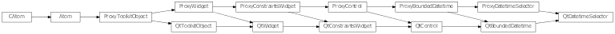

Bases: enaml.widgets.bounded_datetime.BoundedDatetime
A widget to edit a Python datetime.datetime object.
This is a geometrically smaller control than what is provided by Calendar.
A python date format string to format the datetime. If None is supplied (or is invalid) the system locale setting is used. This may not be supported by all backends.
Whether to use a calendar popup for selecting the date.
A datetime selector expands freely in width by default
A reference to the ProxyDateSelector object.

Bases: enaml.qt.qt_bounded_datetime.QtBoundedDatetime, enaml.widgets.datetime_selector.ProxyDatetimeSelector
A Qt implementation of an Enaml ProxyDatetimeSelector.
A reference to the widget created by the proxy.
Return the current datetime in the control.
| Returns: | result (datetime) – The current control datetime as a datetime object. |
|---|
Set the widget’s minimum datetime.
| Parameters: | datetime (datetime) – The datetime object to use for setting the minimum datetime. |
|---|
Set the widget’s maximum datetime.
| Parameters: | datetime (datetime) – The datetime object to use for setting the maximum datetime. |
|---|
Set the widget’s current datetime.
| Parameters: | datetime (datetime) – The datetime object to use for setting the datetime. |
|---|